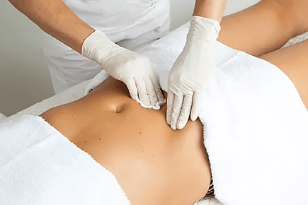
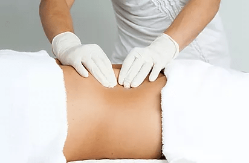
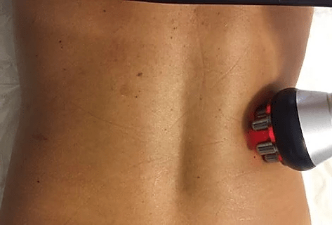

Ivone Paixão é especialista e coach em massoterapia e estética corporal, licenciada pelo estado de Nova Iorque e possui certificações americanas e brasileiras. Atua há mais de 15 anos no mercado oferecendo serviços estéticos inovadores, eficazes e seguros.
Trabalhos desenvolvidos com foco em resultado, qualidade, confiabilidade e ética afim de contribuir para o equilíbrio físico e mental dos seus clientes.
Contact
Entre em contato conosco pelo WhatsApp. Basta clicar no ícone abaixo. É simples, fácil e rápido!
Over time, the skin undergoes wear and tear, consequently the appearance of wrinkles, age spots and dark circles is inevitable due to the decrease in tissue elasticity. The treatment of Facial Rejuvenation through Radiofrequency is a great ally to reduce all these symptoms that affect the face and helps restore the youth of the skin.
The facial treatment using Radiofrequency added to the use of ultrasound helps in deep tissue cleaning and brings inducing effects that painlessly and effectively rejuvenate the skin of the face.
Below we list the benefits that the treatment can bring to the client:
Removal of bacteria deep in the pores
Improves blood and lymphatic circulation
Removal of excess water and residue under the skin
Exfoliation of dead skin cells
Lightening of dark circles
Elimination of toxins associated with aging and tissue fatigue
Promotes the breakdown of cellulite and tissue fat
Increases oxygenation and release of nutrients to cells, which renews the skin's vitality
Increases enzyme activity through mitochondrial stimulation
Dermaroller and Hyaluronic Acid
The application of Hyaluronic Acid next to Dermaroller helps to stimulate tissue collagen. The Dermaroller is a device composed of an acrylic roll with micro needles on its surface that, when applied to the skin, causes Hyaluronic Acid to penetrate the superficial layer of the epidermis promoting its restructuring.
This treatment combined with massages and other firming active ingredients brings excellent results to the client's skin.
This treatment is widely used considering that the healing period is short, about 5 days, and also does not damage the skin. After a few sessions of this treatment it is noticed that the skin is soft, with less expression lines and more resistant.
The procedure is practically painless since the microneedles are delicate and make holes in the skin. This method can be a great ally to skin recovery treatments after sun exposure in summer and snow in winter. Below we list the benefits that the treatment can bring to the client:
Decreased sagging fabric
Correction of light wrinkles
Smoothing expression lines
Facial rejuvenation
Decrease in acne scars
Lymphatic Drainage Facial
Some people think that lymphatic drainage is associated only with the body, but this treatment can bring many benefits to the face of the client. In addition to activating blood circulation in the face region, this treatment promotes relaxation of the facial muscles and helps the elimination of toxins (which cause fine lines and expression marks).
Below we list the benefits that the treatment can bring to the client:
Decreased fluid retention
Reduction of bruises resulting from trauma, illness and surgery
Reduction of dark circles and expression marks
Revitalization of the face skin
Lymphatic Drainage for Pregnant Women
The combination of lymphatic drainage and pregnancy can bring many improvements to this delicate period. Drainage stimulates venous and lymphatic circulation, reducing fluid retention and decreasing the typical swelling of pregnancy, in addition to stimulating lactation, it prevents varicose veins and some problems related to hormonal changes, such as migraine, insomnia, constipation and tiredness.
During treatment, pregnant women get to know each other better and accept the new body identity. In this way, the woman starts to have an increase in emotional well-being, further strengthening the bond with the baby.
Below we list the benefits that the treatment can bring to the client:
Decreased fluid retention and swelling typical of pregnancy
Stimulation of lactation
Breast desensitization
Prevention and combat of varicose veins
Reduction of cramps and tiredness in the legs
Assistance in combating cellulite and stretch marks
Tension relief and reduction of muscle pain
Increase in the feeling of relaxation
Decreased stress
Improved body immunity
Stimulates lymphocyte production by lymph nodes
It is important to note that lymphatic drainage must be performed by trained professionals, as the poorly executed technique can stimulate uterine contractions and even cause the precipitation of childbirth after the sixth month of birth. gestation. It can also compromise circulation and cause bruising.
We remind you that the treatment is contraindicated for pregnant women with uncontrolled hypertension, renal failure, deep vein thrombosis, skin infections and skin rashes.
Pre-operative Lymphatic Drainage

The success of the surgery does not depend only on the surgical process. With the lymphatic drainage in the preoperative period , the aesthetic result is more satisfactory and prevents the appearance of possible complications. Preoperative treatment has the following objectives:
Moisturize the skin
Improve blood and lymphatic circulation
Improve skin absorption of nourishing and moisturizing products
Awareness of the client's breathing and posture
Physical and mental relaxation
Relief from tension and anxiety
We recommend that treatment be started 3 months before surgery.
Post-operative Lymphatic Drainage

In the post-operative period, lymphatic drainage is one of the most applied treatments in the field of aesthetic medicine. This drainage can be carried out in isolation or it must be started as soon as possible after the referral and release by the doctor. Post-operative treatment has the following objectives:
Reduce edema and bruising
Decrease fluid retention
Decrease the likelihood of fibrosis
Prevent possible surgical complications
Providing comfort, well-being and pain relief
Improve blood and lymphatic circulation
Assist in tissue restoration
In some cases treatments like Endermology, Ultrasound, among others are also indicated. These treatments have analgesic, anti-inflammatory and anti-edematous action, helping to break down accumulated fibrosis in dermal connective tissue. The Celutex vibrating device is also used to shape the body.
We recommend that treatment be performed until the fourth month after surgery.
Rejuvenating Massage Therapy
A Massoterapia Facial Rejuvenescedora tem como foco combater a flacidez facial, deixando a pele mais firme e hidratada. Atua também na redução de rugas e seus efeitos são benéficos e duradouros. O tratamento é realizado por meio da massoterapia manual aliada à tecnologia do sistema de Ultra-som Infravermelho. Abaixo estão relacionados alguns dos benefícios que esse tratamento traz:
Remoção as células mortas
Melhora na circulação do tecido
Ameniza as olheiras e bolsas sob os olhos
Renova a coloração e elasticidade natural da pele
Diminuição na expressão “cansada” do rosto
Auxilia no rejuvenescimento facial
Postpartum Treatment
Postpartum treatment is mainly focused on the woman's belly, considering that this region suffered greatly during the gestation period, about 9 months. The focus of the treatment is to reduce not only localized stretch marks, but also the sagging of the tissue. Another objective achieved is the reduction of water retention and scar of cesarean section.
Along with this treatment, we recommend that treatments such as Lymphatic Drainage be performed to improve fluid retention and Microneedling to reduce the visual aspect of stretch marks and scars from childbirth.
Microneedling
Microneedling (Microneedling) is one of the most modern aesthetic treatments on the market.
This treatment is done with stainless steel microneedles that can be adjusted from 0.25 to 1.5 mm. The microneedles cause almost imperceptible microperforations in the skin, inducing the regeneration and formation of collagen and elastin, resulting in a firmer and rejuvenated skin. This procedure also contributes to better blood circulation by increasing the activity of nutrients in the area.
Along with the microperforations a serum is applied containing substances suitable for the needs of each client. These substances are absorbed with great efficiency and speed by the deeper layers of the tissue.
Below we list the benefits that the treatment can bring to the client:
Improved skin texture
Skin rejuvenation
Reduction of scars, including acne and burns
Reduction of wrinkles (light, medium and deep)
Decrease in excessive sebum production
Increased penetration and action of active substances
Reduction of stretch marks and cellulite
Cryotherapy
Cryotherapy next to the wrapping with a "PVC" band or plastic allows the body to be cleaned and detoxified, promoting an improvement in the client's metabolic balance, helping the body to expel excess fluid and reduce cellulite.
cryotherapy works with a cooling wrap that also acts in reducing the client's mediated. The treatment is very effective in cases of flaccid tissue, resulting from aging, weight loss or after liposuction. Cryotherapy is also used for weight loss after pregnancy.
Below we list the benefits that the treatment can bring to the client:
Firmer skin
Anti-inflammatory
Detoxification
Thinning
Stimulating metabolism
Increased metabolism and circulation
Improved skin and muscle definition
Improved skin elasticity
During the session the client will probably feel cold which can be a little uncomfortable if the tolerance to this sensation is low.
We recommend that sessions be held twice a week for three months in order for the client to obtain better results.
Thermo Active Body Wrap
The Thermo Active treatment is made with active ingredients that produce heat, that is, raise the body temperature for a prolonged period that lasts up to 24 hours after application. The increase in temperature causes an acceleration in the patient's metabolism, helping to effectively reduce measures and improvements in cellulite.
The summary of this treatment consists of the following steps:
Realization of Reductive Massage
Application of reducing cream and Thermo Active in the regions of cellulite and localized fat
Application on the PVC plastic body or strips
Radiofrequency Body Treatment

The Body Treatment with Radiofrequency works with the increase of the internal temperature of the tissue promoting the increase of the blood circulation towards the connective tissue, decreasing the concentration of toxins. The localized heating stimulates the production of collagen and the increase of the metabolism that causes the contraction of the fibers and the toning of the skin almost instantly.
This treatment is indicated for tissue rejuvenation, skin strengthening with sagging regions of the neck, internal parts of the arms and thighs, chin, double chin and other parts of the body.
Below we list the benefits that the treatment can bring to the client:
Removal of bacteria deep in the pores
Improves blood and lymphatic circulation
Removal of excess water and residue under the skin
Exfoliation of dead skin cells
Lightening of dark circles
Elimination of toxins associated with aging and tissue fatigue
Promotes the breakdown of cellulite and tissue fat
Increases oxygenation and release of nutrients to cells, renewing the skin's vitality
Increases enzyme activity through mitochondrial stimulation
Anti-Cellulite Massage
The anti-cellulite massage is an efficient way to treat cellulite, considering that it increases the blood and lymphatic circulation of the site, in addition to reducing the cellulite nodules, thus improving the visual aspect.
The massage is performed by means of specific devices and creams with active ingredients that make the skin softer, smoother and more shiny. Performing the treatment intensively, the results are noticeable in improving cellulite and reducing body measures.
In the first sessions of anti-cellulite massage, it is possible that the region becomes sore and sometimes has some bruising.
Ice application the day after the massage is necessary to reduce the patient's symptoms and discomfort.
We recommend that along with this massage, lymphatic drainage sessions are carried out to obtain a more satisfactory result.
Body Definition Massage
Massage for Body Definition is about massaging the entire body, with intense, fast and repetitive movements, which activate circulation, working with localized fat and helping to eliminate toxins. This massage is summed up in the union of three of the most efficient techniques for reducing measures:
Lymphatic Drainage
Modeling Massage
Roll Up
Lymphatic drainage acts significantly to reduce body measures by eliminating liquids present in the tissues by the body. Modeling Massage is applied with the objective of breaking fat chains, oxygenating tissues and increasing body muscle tone. The roller works the curves and the definition of the body silhouette.
Modeling Treatment for specific areas
Modeling Treatment for Localized Areas is a technique that uses fast and intense maneuvers on the skin, applying pressure through kneading and sliding movements. Among the main benefits are the improvement of tissue oxygenation, the breakdown of the fat chain and the improvement of muscle tone.
This massage aims to empty the fat cells that form the tissue where fats accumulate. We recommend this type of massage to fight cellulite, sagging tissue, localized fat and reducing measures.